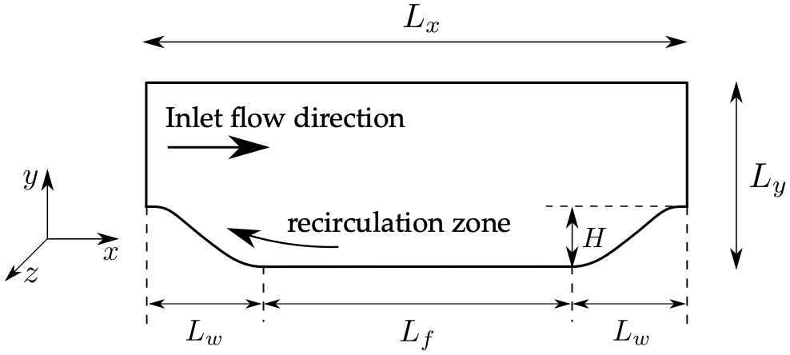
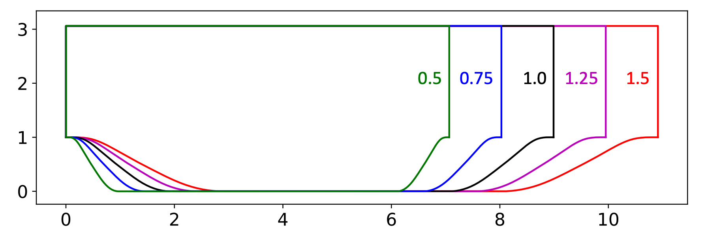
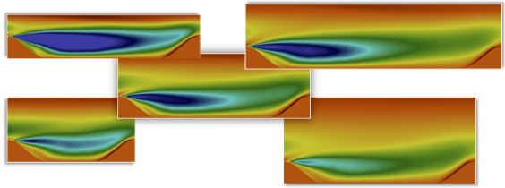

|
Public Access (formerly Langley Research Center)Turbulence Modeling Resource |
DNS: Periodic Hills of Parameterized Geometries
Return to: Data from DNS - Intro Page
Return to: Turbulence Modeling Resource Home PageThe data on this page were provided by Sylvain Laizet, and organized by
Xuhui Zhou.
For the purpose of deriving data-driven, machine-learning-based turbulence models, existing benchmark datasets are often unsuitable.
Data are needed from systematically and continuously varied flow configurations with maximum coverage in the parameter space.
To this end, DNS of flows over periodic hills with parameterized geometries have been performed, resulting in a family of flows
ranging from incipient to mild and massive separations. The dataset consists of 29 simulations with different geometries, all at a
Reynolds number of 5600 (based on hill crest height H and bulk velocity Ub at the crest).
The design of the parameterization of the periodic hill geometry is described in the following paper:
Other details regarding the general setup of this test case can be
found in Breuer, M., Peller, N., Rapp, C., and Manhart, M., "Flow Over Periodic Hills: Numerical and Experimental Study in a Wide Range of
Reynolds Numbers", Computers & Fluids, Vol. 38, No. 2, 2009, pp. 433-457,
https://doi.org/10.1016/j.compfluid.2008.05.002.
When the above paper by Xiao et al. was written, only five cases were simulated, with the hill width (Lw) varied.
The 27+2 flow configurations provided here were generated by systematically varying the following parameters of the hill:

Variation of hill width: Five different hill widths were obtained by scaling the width of the baseline hill (i.e.,
Lw/H = 1.929) by a factor of slope parameter alpha = 0.5, 0.75, 1.0 (baseline), 1.25, and 1.5.
Later, the length and height of the channel were also varied, leading to the full 27+2 DNS database presented here:


The DNS data files are given here:
When unzipped, you will find 29 files with names: alphXX-YYYY-ZZZZ.dat
Data loading: Each file alphXX-YYYY-ZZZZ.dat contains (1) x and y coordinates,
(2) mean velocity, pressure, dissipation, and vorticity fields, (3) Reynolds stresses and root-mean-square (RMS) pressure fluctuations.
Example for loading the data is as follows:
The DNS data for these 29 cases have been interpolated to coarse meshes for use in OpenFOAM by
Xuhui Zhou,
who also organized the dataset shared here. The RANS-resolution data (along with the original DNS data), are available at the
GitHub site
https://github.com/xiaoh/para-database-for-PIML of
Heng Xiao.
The 29 Direct Numerical Simulations (DNS) are performed by solving the forced incompressible Navier-Stokes equations for a fluid
with a constant density. A forcing field f(x,t) is used to enforce boundary conditions through an immersed boundary method and to ensure a
specified mass flux. The data are collected after a transitional period, from the point when the flow is fully developed.
A simulation time step delta t = 0.0005H/Ub is used. For all the calculations, turbulent statistical data have been
collected over a time period T = 750H/Ub.
Data are averaged in time and in the spanwise direction for which Lz/H = 4.5
is always discretised with nz = 192.
Additional details concerning the code and computational methodology can be found in:
Laizet, S. and Lamballais, E., "High-Order Compact Schemes for Incompressible Flows: A Simple and Efficient Method with Quasi-Spectral Accuracy,"
Journal of Computational Physics, Vol. 228, No 16, pp. 5989-6015, 2009,
https://doi.org/10.1016/j.jcp.2009.05.010,
Laizet, S., "Incompressible Navier-Stokes Equations Solver with Multiple Scalar Transport Equations,"
https://github.com/xcompact3d/Incompact3d,
and the references found therein.
This new dataset has been used in the following paper:
Han, J., Zhou, X.-H., and Xiao, H., "An Equivariant Neural Operator for Developing Nonlocal Tensorial Constitutive Models,"
https://arxiv.org/abs/2201.01287.
Return to: Data from DNS - Intro Page
Recent significant updates:
For example, alph075-80355-3036.dat is the data file with alpha = 0.75, Lx/H = 8.0355, and Ly/H = 3.036.
import numpy as np
import pandas as pd
data = np.loadtxt("alph075-80355-3036.dat", skiprows=20)
df = pd.DataFrame(data, columns = ["x","y","u_mean","v_mean","w_mean","p_mean","dissipation_mean","vorticity_mean",\
"uu","vv","ww","uv","uw","vw","pp"])
none
Page Curators: Christopher Rumsey,
Ethan Vogel,
Clark Pederson
Last Updated: 05/17/2023